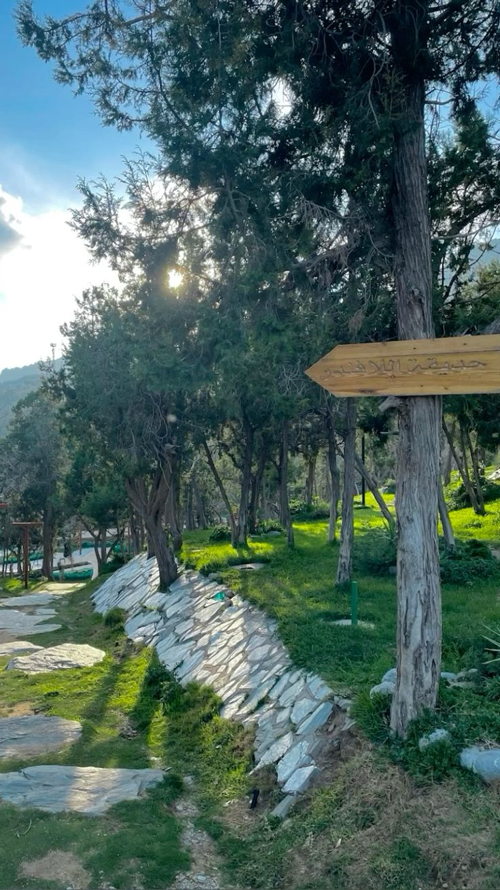

أهلاً بك في المندق 🌿
نتمنى لك جولة ممتعة بين طبيعة المندق الخلابة وأجوائها الجميلة.
مدينة المندق
مدينة المندق إحدى مدن منطقة الباحة في المملكة العربية السعودية، وتتميز بموقعها الجبلي المرتفع ومناخها المعتدل صيفًا، مما يجعلها وجهة سياحية مميزة.
تشتهر بطبيعتها الخضراء وكثرة الغابات مثل غابة رغدان، كما تنتشر فيها المزارع والمنتزهات الطبيعية التي تجذب الزوار.
مميزات مدينة المندق
- المناخ المعتدل
- الطبيعة الخلابة
- الهدوء وجمال المناظر
- موقعها المميز في جبال السروات


جدول أهم الأخبار
| عنوان الخبر | الوصف |
|---|---|
| تطوير المنتزهات | تم تطوير عدد من المنتزهات لزيادة الجذب السياحي. |
| فعالية وطنية | إقامة فعاليات احتفالية بمناسبة اليوم الوطني. |
وفي الختام، تعتبر مدينة المندق من أجمل مدن منطقة الباحة، وتجمع بين جمال الطبيعة وراحة الأجواء.